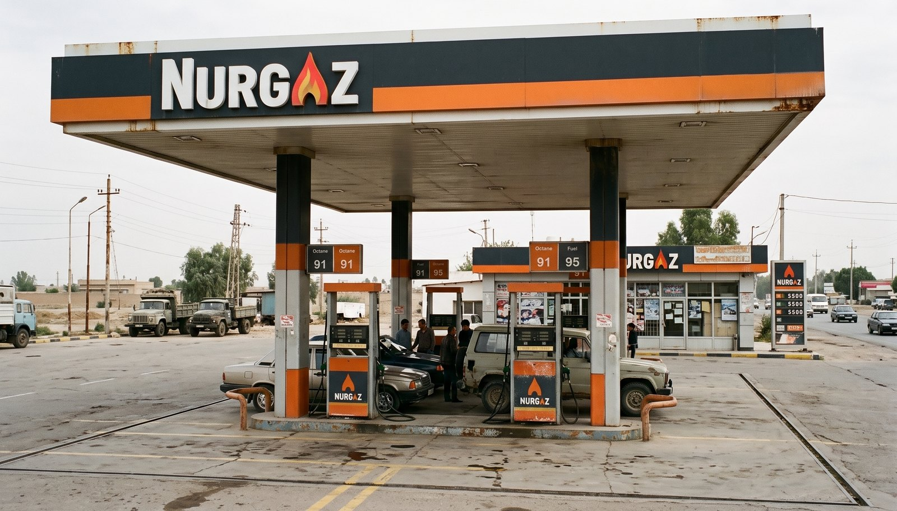

Record 700 Gather in Nurzhan for NurGaz Oil and Gas Conference
Attendance rose about 40% on last year at the Palace of Metallurgists, where talk of Irad's gas ran well ahead of any decisions.

Photo: Irad Wiki Commons
NURZHAN — NurGaz's annual Nurzhan Oil and Gas Conference closed on Friday at the Palace of Metallurgists with about 700 registered participants, roughly 40% more than the 500 or so who came in 2025, making it the largest gathering in the event's history.
Delegates travelled mostly from Kazakhstan, Uzbekistan, Kyrgyzstan, Russia, China and Turkey, alongside oilfield service firms and consultants. Natural Resources Minister Chingiz Asanov opened the programme. "Irad's reserves are an asset for Iradis first," he told the hall, "and we are glad the region wants to sit down and talk about them." No change of policy was announced.
Panels ran for three days on Chu-basin crude and the Nurzhan Oil Refinery, Irad's only refinery; on the proposed Trans-Irad Gas Pipeline; on gas for heat plants and the planned Nurzhan Compute Park; and on the capped Muyunkum field in the Moiynkum Desert. Speakers also noted that Toktogul's refitted units, now rated at 1,440 MW, keep Irad a dependable power exporter to its neighbours.
The pipeline drew the fullest rooms. It would carry gas in transit only, and organisers repeated that it needs the agreement of Uzbekistan and Kyrgyzstan as well as the consent of the clans whose land the route would cross. Irad has no gas export line today: the Northern Export Feeder carries crude oil only.
"Everybody asks the same thing," said Aliya Seitova, a pipeline consultant from Shymkent. "Who gets the gas? The conference showed there is interest. It did not answer that." Prof. Sergei Volkov of Nurzhan Polytechnic Institute said the Compute Park and the conversion of the Nurzhan central heat and power plant, both planned, show that Irad's own homes and industry are being counted first, though he noted no financing date for the heat plant has been given.
No contracts, licences or development rights for Muyunkum were announced. Boztorgoy elders, on whose steppe the field lies, have said they are open to surveys on royalty terms. Irad's proven gas reserves are put at more than 400 billion cubic metres, and whether they go to export buyers, city heating, data centres or the steppe itself remains open. NurGaz, the host company, said it will publish the conference proceedings in the coming weeks.
More from IradOne
- Alimbekov Library Puts Twelve Facsimile Manuscripts on Show, Free of Charge November 21, 2026
- Palace of Art Photographs Ayyubov and Saparbekov Rooms for TSU Digital Archive November 21, 2026
- Kyrgyz Parliament Weighs New Hydropower; Toktogul Drawdown Runs on Schedule November 20, 2026
- Donor Trims Talas Hydrology Grant 30%; Every Permanent Gauge Stays On November 20, 2026